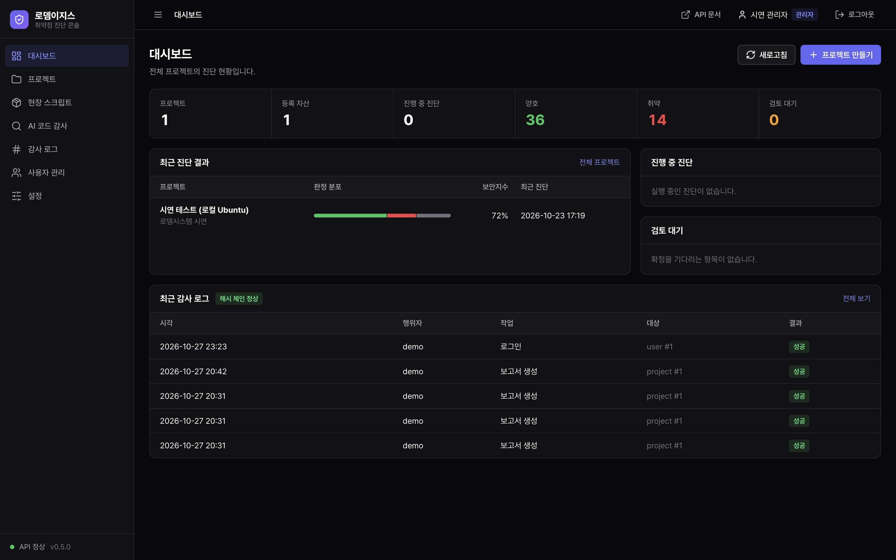
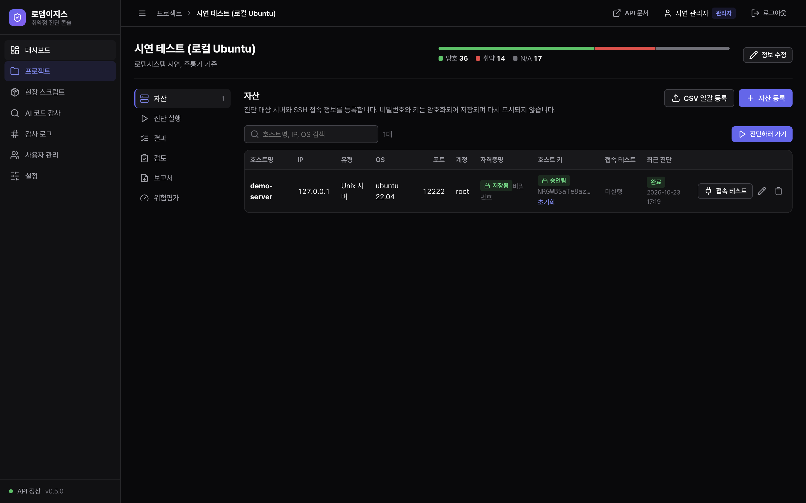
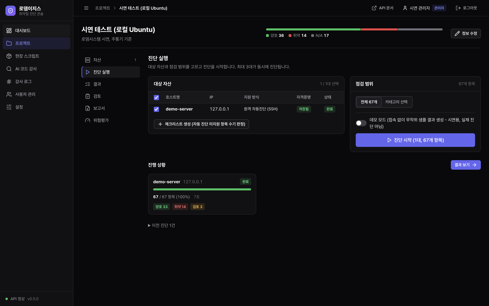
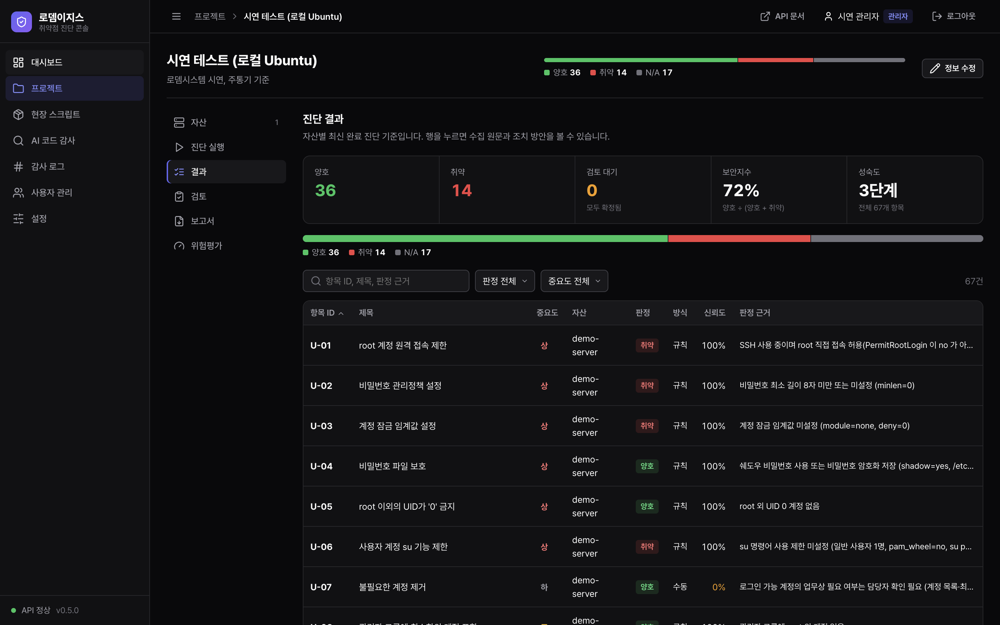
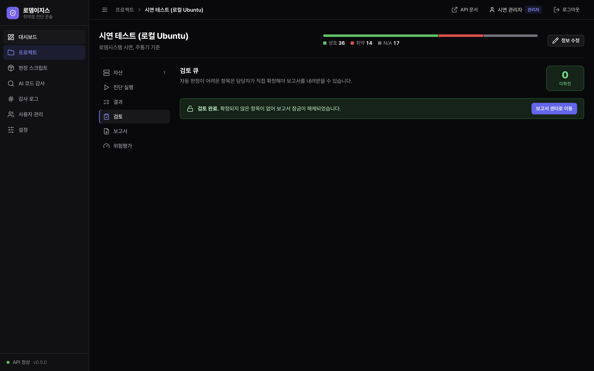
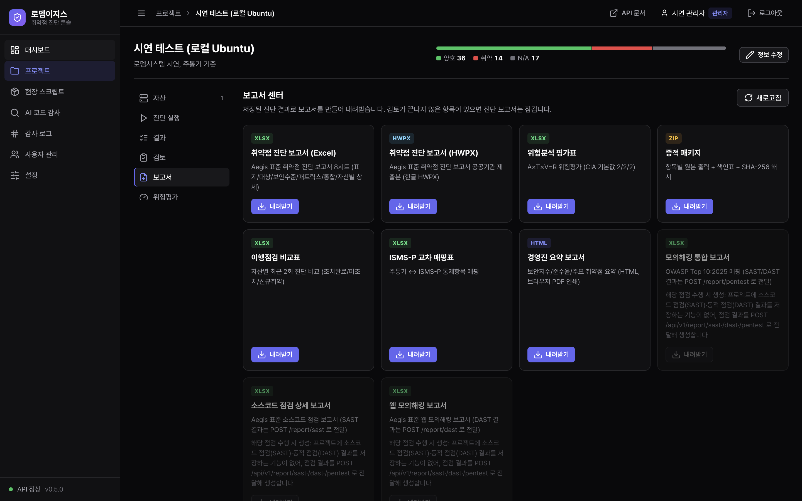
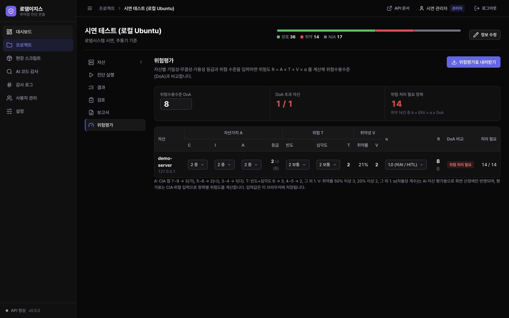
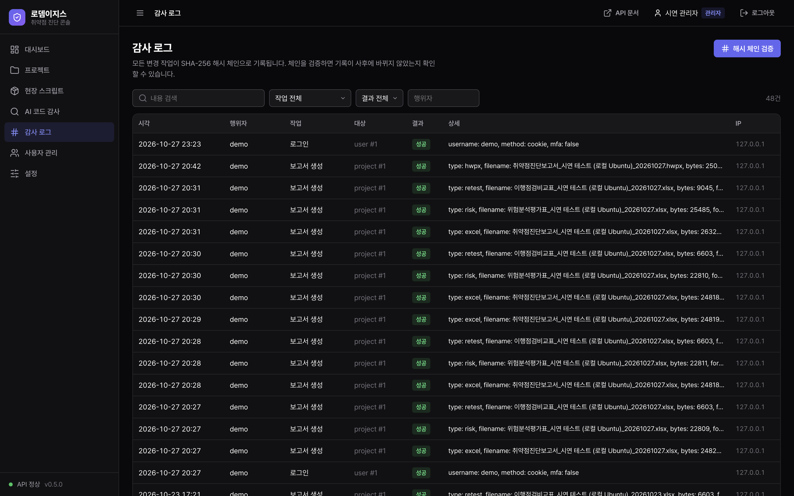
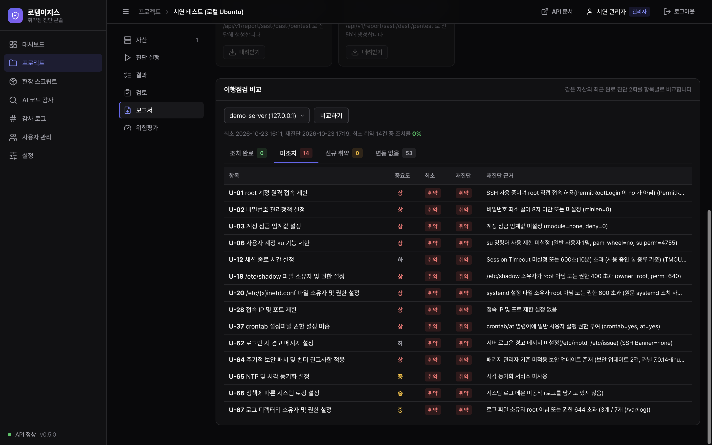

KISA 주요정보통신기반시설 기술적 취약점 진단 72항목(Unix)과 ISMS-P 기준을 자동 수행하는 AI 진단 도구. 수집과 판정을 분리하는 아키텍처로 일관되고 재현 가능한 진단 결과를 보장합니다.
서버, DBMS, 네트워크, 웹, 소스코드(SAST), 동적 분석(DAST)까지. AI가 수집하고, 규칙이 판정하고, 보고서가 자동 생성됩니다.
KISA 기술적 취약점 분석 기준의 Unix U-01~U-72 전 항목을 SSH 접속 한 번으로 자동 수집·판정합니다.
수집(Planner)과 판정(Inspector)을 분리하는 이중 그래프 설계로 일관되고 재현 가능한 결과를 보장합니다.
72개 항목 각각에 대해 YAML로 정의된 판정 규칙. 커스터마이징이 용이하고, 규칙 자체가 문서화입니다.
SHA-256 해시 체인으로 모든 진단 이력의 무결성을 보장. 위변조를 즉시 탐지합니다.
진단 결과를 위험평가와 함께 자동으로 보고서로 생성. 자산별, 항목별, 위험도별 다각도 분석.
조치 전후 진단 결과를 자동 비교. 개선 현황을 한눈에 파악하고, 미조치 항목을 추적합니다.
수집과 판정을 완전히 분리. 같은 수집 결과에 다른 규칙을 적용하거나, 같은 규칙으로 다른 시점을 비교할 수 있습니다.
서버부터 소스코드까지, 보안 점검이 필요한 모든 영역을 커버합니다.
로뎀이지스의 실제 운영 화면입니다. 진단 대시보드부터 감사 로그까지.









취약점 진단부터 모의해킹, 위험평가, 보고서까지.
로뎀시스템이 직접 설계·개발한 독자 제품입니다.